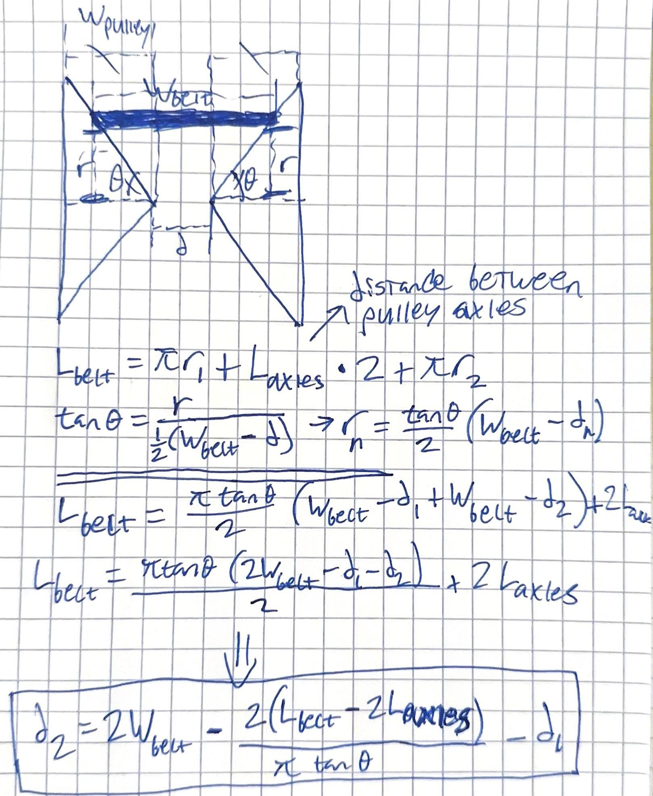

0
CVTs allow cars to have infinitely many gear configurations, because they don't actually use gears and instead look something like the configuration above. It is basically two variable pulleys each consisting of two opposing cones. In this case the top pulley is connected to the engine (constant rpm) and the bottom pulley is connected to the drivetrain. Notice that to keep tension (and thus torque on each pulley) the belt must remain at a constant length. Because of that both pulleys have to be variable and have to switch ratios accordingly to keep the belt tensioned. This is how I derived the relationship between pulley widths to keep the belt tension constant. And here is a desmos link: https://www.desmos.com/calculator/rjcs07qomy
